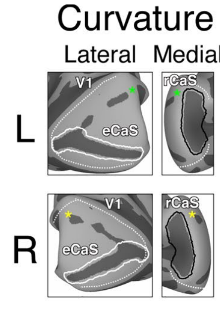
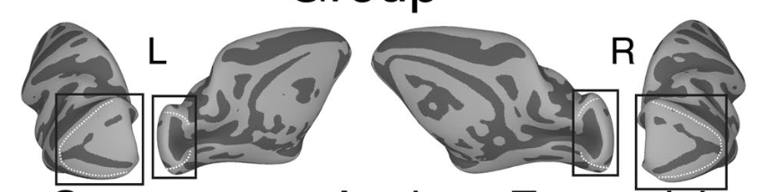

activislabactive vision laboratory
Receptive field mapping · module 01
V1 simple cell simulator
Click anywhere on the 80°-wide tangent screen to place the cell’s receptive-field center. Its diameter grows with eccentricity using macaque V1 scaling; map the signed field with sparse dots or a contrast-modulated noise movie.
Recording siteV1 · 6.0°center +6.0°, 0.0°
The display spans 80 degrees of visual angle horizontally, from minus 40 to plus 40 degrees, and 42 degrees vertically. Choose balanced bright and dark dots or a contrast-modulated Gaussian noise movie. Click to move the receptive-field center; arrow keys move it by half a degree and Shift plus an arrow moves it by one tenth of a degree. A central cross is the fixation target and a turquoise circle marks the selected receptive field.
bright / dark dotsframe —pass 0/10speed 1×
01 · cortical site
Predicted electrode location
Whole-brain reference

Live reverse correlation
From spike-triggered stimuli to RF
The estimator looks backward from every spike by 60 ms. Bright- and dark-triggered response rates are subtracted to reveal signed ON and OFF subregions.
01 · EVENTS
Spike-triggered dot frames
Gray shows sampled locations; red marks the strongest positive sample 60 ms before each spike.
02 · FIRST ORDER
Magnified reverse-correlation RF
Fixed 8° × 8° RF-centered window; the spatial scale does not change. Blue OFF, red ON, gray zero.
03 · DATA FIT
Enlarged fit of measured RF
The fitted Gabor appears after four passes; the dashed ellipse is the fitted Gaussian envelope.
How to read the experiment
Position changes scale; spikes reveal structure
The RF’s selected center determines its eccentricity and therefore its V1-scaled diameter. The signed structure is then estimated with the same first-order reverse correlation.
Place and scale the RF
Clicking sets its center in visual degrees. The simulator applies the V1 diameter/eccentricity ratio of 0.21 from Freeman and Simoncelli’s physiological meta-analysis, with a small foveal floor.
Look backward 60 ms
For every spike, the estimator retrieves the complete earlier stimulus frame. Sparse dots use bright-minus-dark rates; the pink-noise movie uses a Fourier-whitened spike-triggered average.
Fit the recovered field
A least-squares Gabor fit estimates center, orientation, spatial frequency, phase, and envelope from panel 02’s measured signed RF. Panel 03 enlarges that fitted surface.
Primary literature
Sources & method boundary
The estimator follows references 2, 3, and 8 of the supplied review: randomized bright/dark sparse noise, spike-triggered temporal alignment, and a signed first-order RF.
- 01
Supplied review · method synthesis
DeAngelis, G. C., Ohzawa, I. & Freeman, R. D. (1995). Receptive-field dynamics in the central visual pathways. Trends in Neurosciences, 18, 451–458.
doi:10.1016/0166-2236(95)94496-R ↗ - 02
Review ref. 2 · 2D reverse correlation
Jones, J. P. & Palmer, L. A. (1987). The two-dimensional spatial structure of simple receptive fields in cat striate cortex. Journal of Neurophysiology, 58, 1187–1211.
doi:10.1152/jn.1987.58.6.1187 ↗ - 03
Review ref. 3 · x-y-t reverse correlation
DeAngelis, G. C., Ohzawa, I. & Freeman, R. D. (1993). Spatiotemporal organization of simple-cell receptive fields in the cat’s striate cortex. I. Journal of Neurophysiology, 69, 1091–1117.
doi:10.1152/jn.1993.69.4.1091 ↗ - 04
Review ref. 8 · first-order motion prediction
McLean, J., Raab, S. & Palmer, L. A. (1994). Contribution of linear mechanisms to the specification of local motion by simple cells in areas 17 and 18 of the cat. Visual Neuroscience, 11, 271–294.
doi:10.1017/S0952523800001632 ↗ - 05
Elongated ON/OFF subregions
Hubel, D. H. & Wiesel, T. N. (1959). Receptive fields of single neurones in the cat’s striate cortex. Journal of Physiology, 148, 574–591.
doi:10.1113/jphysiol.1959.sp006308 ↗ - 06
RF size & cortical magnification
Hubel, D. H. & Wiesel, T. N. (1974). Uniformity of monkey striate cortex. Journal of Comparative Neurology, 158, 295–305.
doi:10.1002/cne.901580305 ↗ - 07
Two-dimensional Gabor approximation
Jones, J. P. & Palmer, L. A. (1987). An evaluation of the two-dimensional Gabor filter model of simple receptive fields. Journal of Neurophysiology, 58, 1233–1258.
doi:10.1152/jn.1987.58.6.1233 ↗ - 08
Gabor-shaped subunits · aspect ratio Y/X
Liu, L. et al. (2016). Spatial structure of neuronal receptive field in awake monkey secondary visual cortex (V2). PNAS, 113, 1913–1918.
doi:10.1073/pnas.1525505113 ↗ - 09
- 10
RF diameter scaling with eccentricity
Freeman, J. & Simoncelli, E. P. (2011). Metamers of the ventral stream. Nature Neuroscience, 14, 1195–1201. Their physiological meta-analysis estimates V1 scaling at 0.21 ± 0.07.
doi:10.1038/nn.2889 ↗ - 11
Macaque V1 cortical retinotopy
Arcaro, M. J., Livingstone, M. S., Kay, K. N. & Weiner, K. S. (2022). The retrocalcarine sulcus maps different retinotopic representations in macaques and humans. Brain Structure and Function, 227, 1227–1245.
doi:10.1007/s00429-021-02427-0 ↗ - 12
Macaque V1 spatial-frequency selectivity · 16 c/° slider limit
De Valois, R. L., Albrecht, D. G. & Thorell, L. G. (1982). Spatial frequency selectivity of cells in macaque visual cortex. Vision Research, 22(5), 545–559.
doi:10.1016/0042-6989(82)90113-4 ↗ - 13
Contrast-modulated 1/f Gaussian noise · Fourier-corrected STA
Niell, C. M. & Stryker, M. P. (2008). Highly selective receptive fields in mouse visual cortex. The Journal of Neuroscience, 28(30), 7520–7536.
Journal webpage ↗doi:10.1523/JNEUROSCI.0623-08.2008 ↗